来源：https://hjlrkivx2z.feishu.cn/docx/Hr22dk4floyueix5i6WcqARbnib
各位圈友们，见字欢喜，我是《搞钱搞流量》的播客主当小时，专注帮知识付费ip播客引流私域变现的当小时，播客全网百万播放量。
一年前因为跟了生财的商业访谈航海做了一档播客，没想到上周发的一条播客就帮嘉宾卖了2w的知识付费产品。
想象一下，在这个快节奏的内容消费时代，如何真正地吸引、留住你的受众？尤其是作为知识付费IP主理人，怎样让你的内容在无数短视频、图文推送中脱颖而出，并在不知不觉中打动用户，让他们心甘情愿地为知识买单？
今天，作为播客主理人，我将和你聊聊我如何通过精心策划的访谈，帮助知识付费IP主理人通过“耳朵经济”打动听众，让课程更接地气、更有吸引力，也更具“购买冲动”。
接下来，我跟大家分享一下，我的策略、执行过程、可迁移的方法论。
全文6q字，阅读大概需要5min
作为一位《搞钱搞流量》 的播客主理人， 在访谈了一百多位各种各行各业如何搞钱搞流量后。
探索到了播客与知识付费结合的方式时，越来越深刻地意识到，播客不仅是一种内容传播的形式，更是思想的表达。透过轻松的、随意的对话形式，我们可以把那些“专业术语”转化成大家听得懂的“人话”。
之前做播客只是一种爱好，后面误打误撞的通过生财拉新播客变现了一些钱💰之后，我开始总结复盘，并参考了国外成熟的播客主和《搞钱女孩》的变现模式，发现播客主流的变现方式居然的都是知识付费。
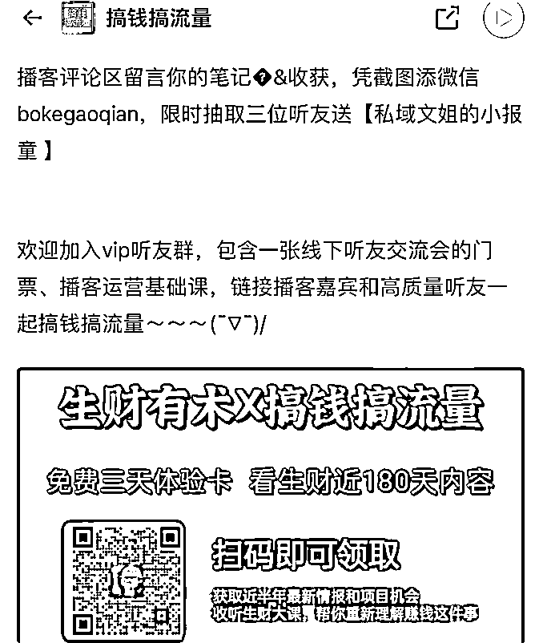
加上我本人是一个深度的知识付费爱好者， 这两者一碰撞就产生了奇妙的火花。
知识的普及有时需要耐心和细致的讲解，特别是那些理论性、方法性的内容。通过访谈的形式，知识付费主理人可以在播客中用故事、案例甚至比喻来让内容更鲜活。这样一来，听众不再觉得知识难以接近，而是被吸引住，甚至想进一步去体验课程。
如今的知识付费市场中，找到创新性的推广方式至关重要。而播客访谈正逐渐成为知识付费主理人获客和转化的强大工具。通过播客访谈，知识付费的主理人可以更深层次地展示个人价值、拉近与受众的关系，同时借助播客主的流量，实现产品的曝光与销售。
我是如何通过制作专属的知识付费播客访谈详情页，帮知识付费主理人提升转化率的呢？
接下来我以这次可粒的发售作为案例来分享
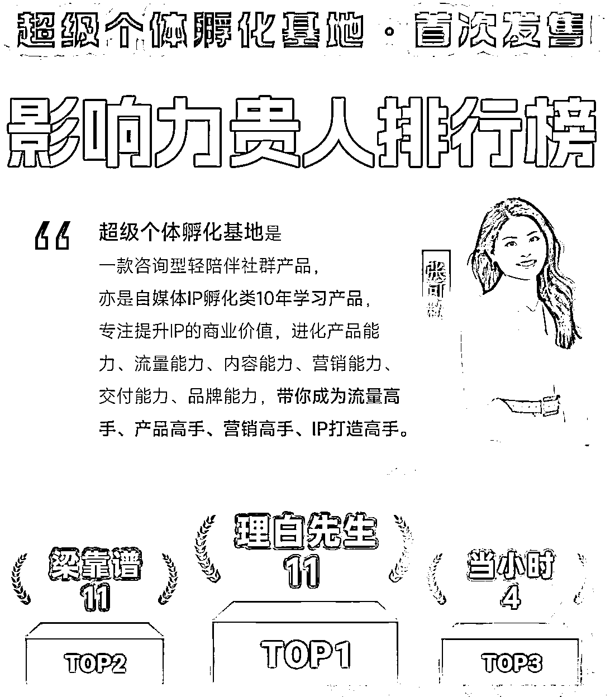
熟悉产品，熟悉嘉宾，定目标 ，以终为始倒推时间节点，朋友圈听友群预热，准备采访提纲、邀请用户访谈提供证言。
说到底，播客的本质是思想的传播，而思想的魅力在于它有穿透力。在互联网的碎片化信息洪流中，真正打动人心的不是漂亮的广告海报图，而是能在心里生根的想法。
而要让想法生根， 绝非60秒的短视频或一次两次就能成， 所以 虽然在录制只有短短的一两个小时，但前期的准备策划和阅读嘉宾的内容及产品熟悉是需要花大量的功夫的，就好像做菜一样，炒菜只要一两分钟，但你从市场买菜备菜研究食谱的过程才是能 产出 好内容发挥作用的地基。
另外也要非常注意播客主和嘉宾之间要产生信任， 访谈是双人舞而非独奏， 播客主嘉宾之间需要建立良好的默契，这样才能配合得好。
所以这次在访谈可粒之前，我们已经录制过一期播客主要在访谈她的个人故事成长经历算是前采了解她的人， 我自己也购买了他的 超级个体孵化基地的产品进行体验 深入了解他的产品。
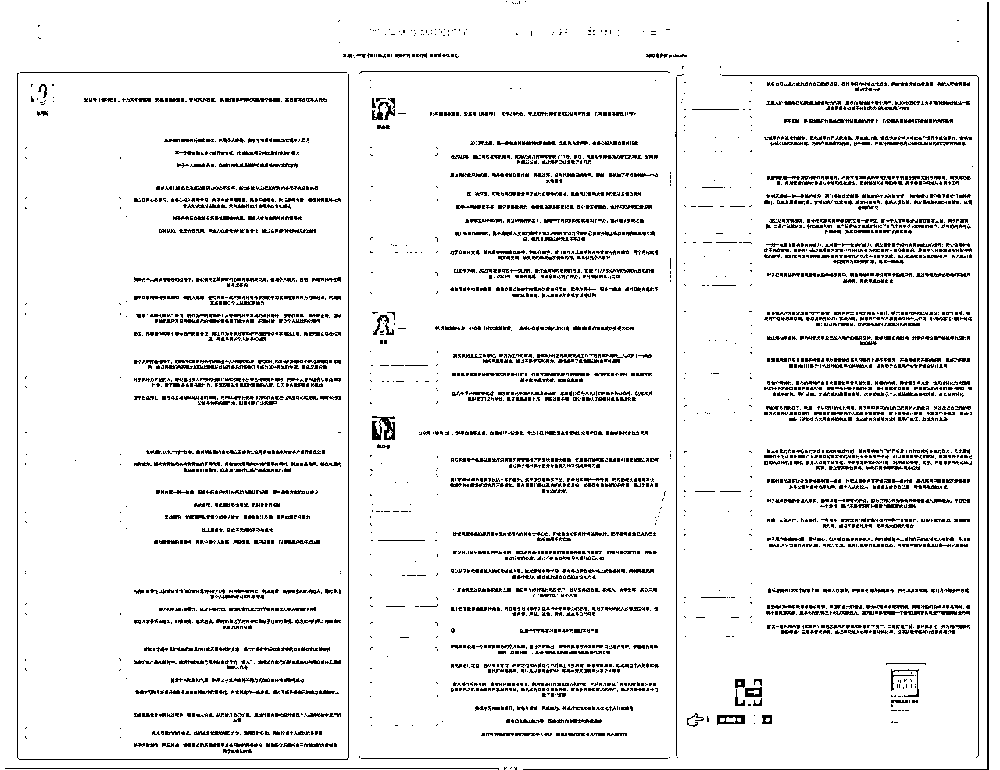
这期阵容也是非常豪华 除了我和嘉宾也联系了非常多嘉宾的买家秀和内容共创人员
💰【主播介绍】
当小时：一个有钱有爱的艺术家，为知识ip播客引流私域变现
🌰【嘉宾介绍】
张可粒：千万大号前编辑，95后自由职业者，全网20万粉丝，专注自媒体IP孵化和超级个体创业，靠自媒体连续年入百万
💰【特邀嘉宾】买家秀
郑自律：93年自由职业者，知乎2.6万粉，专注知乎好物变现和公众号IP打造，23年靠自媒体变现11W+。
黄黄：95后自由职业者，擅长公众号爆文创作和引流，裸辞1年靠自媒体成功变现六位数。
徐柒七: 公94年自由职业者，自媒体17w粉博主，专注小红书爆款引流变现和公众号IP打造，靠自媒体28岁独立买房
💰【本期制作】
剪辑：西月，B站20万粉博主剪辑手，靠播客实现第二曲线。
shownotes文案：愈之，某央媒撰稿人，新书即将出版，全网4万粉写作博主
最会做思维导图的翻译：金多数
运营：星星
shownotes排版：可欣
对于知识付费主理人来说，信任是转化的关键。尤其是在社交平台上，用户很难通过一次短暂的广告了解一个产品的价值，而播客则提供了一个长时间、深度交流的机会。几十分钟甚至3个小时的倾听，能让用户从各个角度去感受主理人的专注和专业度。这种建立在思想交流基础上的信任，远比单纯的广告来得扎实。
播客让ip“人设”变得真实立体
在知识付费领域，我们经常谈到ip“人设”，因为用户信任的是人，而不是冷冰冰的知识。通过播客访谈，用户可以真正了解主理人的想法、性格、做事方式和价值观。这些在短视频和图文广告中难以表达出来的细腻之处，可以通过一场聊得深入的播客呈现得淋漓尽致。
访谈式的播客更是一个拉近距离的好机会。播客主和知识付费主理人或他的学员面对面的对话，有情绪的流露、观点的碰撞，这些都让听众产生一种“我和他很像”的感觉。
无论是主理人的“过来人”经验，还是学员的真实转变故事，都能够引发强烈的共鸣和信任——这才是真正的“卖空气详情页”！
而要如何让用户对ip的人设产生信任感和对产品产生好奇心 这是访谈的关键。
利用个人故事提升认同感
比如可粒访谈一开始分享了自己 是怎么样 购买自己的第一个知识，付费产品学习写作，并很快转回学费的经历，并将过程中遇到的困难与挑战和课程内容相结合，引起了听众的共鸣。
比如为听众提供了一套独家ip打造技巧。听众对这种方法论也非常感兴趣，许多人因而觉得嘉宾非常专业。
比如我会问可粒你这么好看，不好看的人能做么
灵活的访谈节奏，保持节目张力
除了知识类干货，播客内容最好能够有一定的情感起伏，如讨论嘉宾的转型经历、学员的成长故事等。这种故事性可以更好地吸引听众的注意力，同时让内容更具感染力。
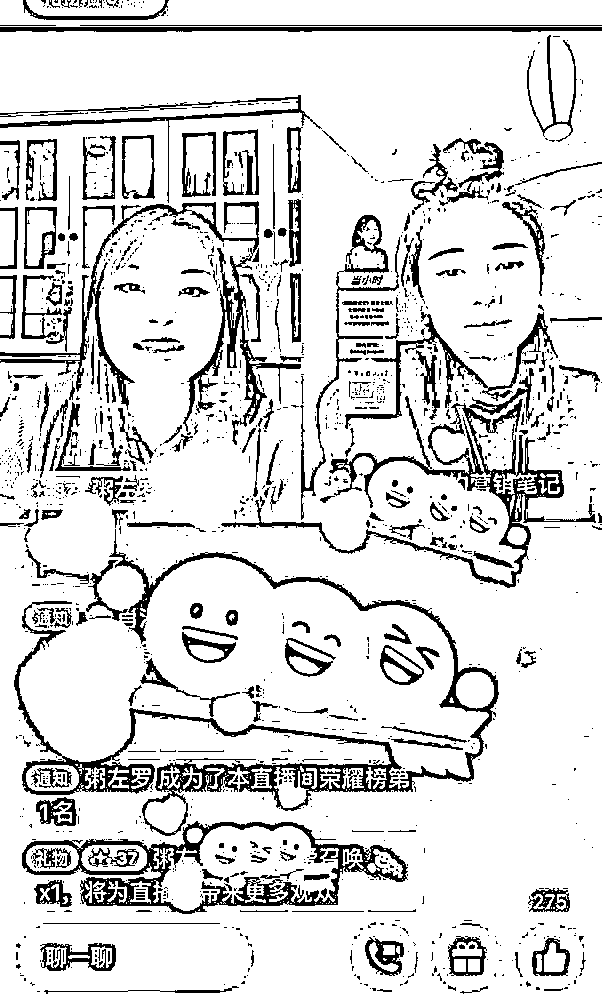
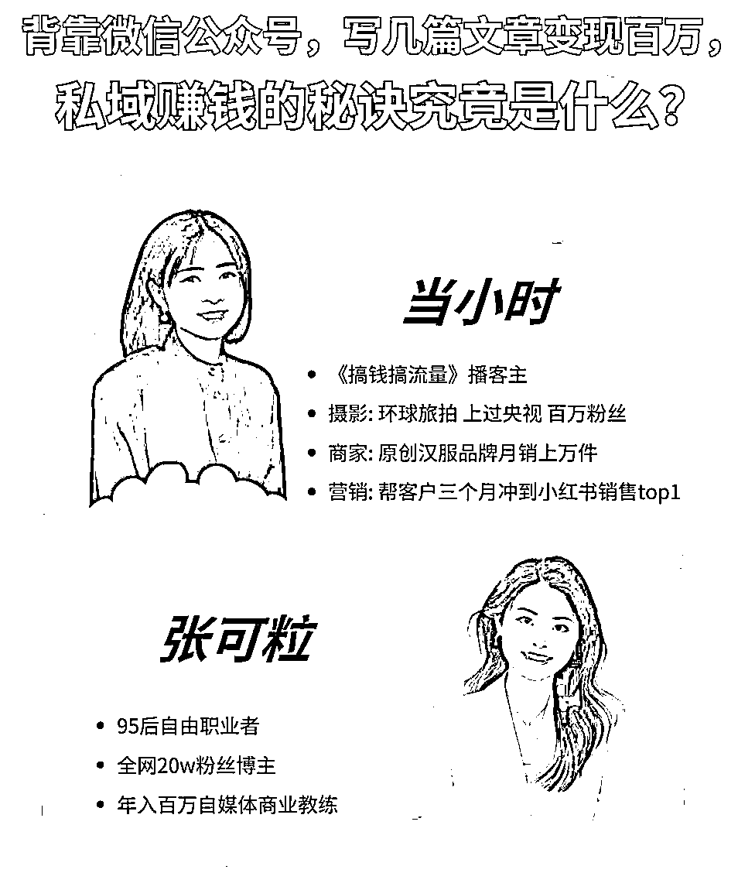
虽然说我每次播客的目的是想帮嘉宾带货，
但我真的不是只引导性的问好的问题
反而有点像是来踢馆拆台的
因为我会提问的时候会带入各种视角
那我现在是一个小白的客户，我会有什么问题？
我现在是一个很刁钻的客户，我会有什么问题？
我现在是你的同行，我会有什么问题？
我现在是一个购买了这个产品，不太满意的客户，我又会有什么问题？
我一般问题会停在嗯，我有点被她说的心动了
不行不行，再说下去我都要掏钱了这种程度
哈哈哈，可能这也是为什么我的播客能帮嘉宾带货的原因吧中立而非推销的态度。 让用户360度的了解这个人。
有听友听完直播就当场把男朋友送进来学习的 我也找他要了一个非常详细的付费原因 他拆解自己也拆解的好详细呀
我觉得她虽然说是刚听完直播就下单，但绝对是理性消费，而不是感性消费 听完直播马上付费5000的原因⬇️
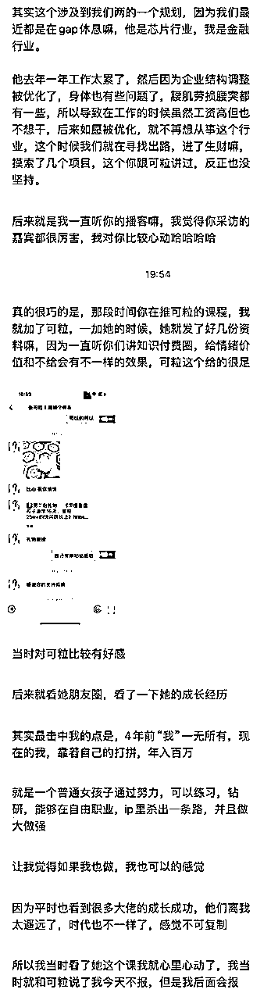
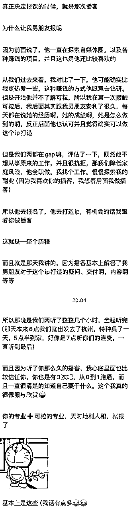
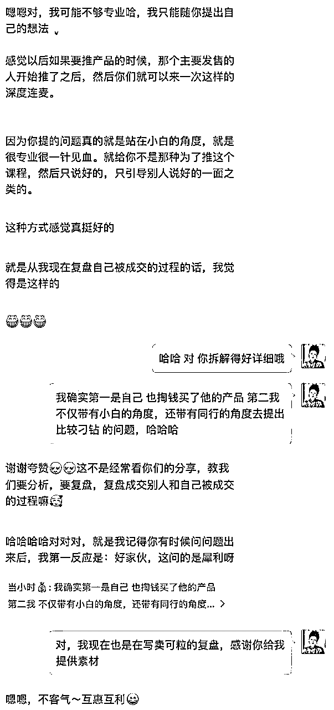
尤其在知识付费这个领域，根本就没有什么可以精确计算的成本。你说跟客户算账能算出个啥？直接绕过了理性的大脑，根本没有什么具体的商品参数，只有大家的用户体验。
所以访谈结束后的售后体验让用户 能产生愉悦的情绪价值，也是非常重要的。
我之前完全不会要情绪价值也不太会给情绪价值，I人一般都比较内向、害羞。就算心里有喜欢或者不喜欢的人，往往也会憋着不说。就像普遍东亚家庭的父母培养出来的孩子，你做得再好，他们也只是默默地说一句“不要骄傲”。
所以和嘉宾可粒刚开始一起配合的时候，我简直有点不适应。她总是会在说完一个点后立即寻求反馈，还会把反馈迅速分享在社群和朋友圈。
我以前只会自己在听友群默默输出，她会说“期待今天的分享的话，拍拍我的脑袋，让我看到你们发财的小手。”
为啥大家都叫可粒为知识付费圈的女明星，不仅仅是因为她长得好看，当然她确实也长得挺好看的！她最近结婚了，晒了一张照片，真的是美得像玲娜贝儿一样，特别给反馈和互动。
这也是知识付费ip打造的重要一环。
比如玲娜贝儿，为什么她能比米老鼠还火？迪士尼的主角不是米老鼠、唐老鸭吗？再不济也是白雪公主、美人鱼、玩具总动员。玲娜贝儿怎么突然火了？这个IP可是连代表作品都没有哦。
在我进入可粒之前，其实我很不会给反馈，也很不会要反馈，结果就是我做了很多事情，客户还不一定能看到。而且，客户的满意度也会下降，因为你做了很多事情，可能根本不符合客户的需求。这样一来，客户看似做了很多，但不一定买单，或者买了也不满意，复购率也低。
尤其是在做乙方之后，我感受到这种情况非常明显。好在我之前能力还算强，才能在这个社会上混得去，哈哈。不然就像大部分苦逼的打工人一样，和老板的关系那么紧张。
你们敢信我帮甲方爸爸每个月多赚几十万，结果还被不续费吗？还有一个甲方爸爸，竟然偷偷绕过我，找我的下属继续给他做事而不续费！
我之前总是觉得只要我能帮甲方赚钱，就一定有合作空间，结果发现并不是这样。有时候你会发现，可粒就像那个同事，虽然她没怎么做事，但每次升职加薪的都是她，而你每次默默工作，却被人针对。
但我真的在跟她贴近的过程中，耳闻目睹了之后，发现给反馈和要反馈做内容提供售后服务这件事真的特别重要，特别香。
在知识付费和流量为王的时代，越来越多的普通人希望通过内容创作赚取收入，但面对竞争激烈的市场，如何找到适合自己的路子，走出一条能持续积累、爆发增长的内容创作路径？作为播客《搞钱搞流量》的主理人，我采访了无数成功的知识付费者，观察到他们的思维模式与策略，终于总结出适合普通人搞钱的三大心法。这三点核心理念并非一蹴而就，而是可以持续迭代升级的，它们可以为普通人带来可观的积累效应和潜在爆发力。
你听过荷花的故事吗？在一片池塘里，荷花第一天只开了一朵，第二天变成两朵，第三天四朵。到第30天，它们一夜之间好像就完全覆盖池塘。这就是复利的力量。我们做内容也是如此：初期内容可能不会引起太大反响，但只要坚持借势和优化，在积累到临界点后，就会发生指数级的增长。
这个“护城河效应”在自媒体内容创作中非常重要，特别是当内容不再仅仅依赖个人实力，而是依托你构建的内容体系时，它可以不断放大你的影响力。比如，初期你可能是通过热点话题、热门嘉宾来引流，但在逐步积累内容库和粉丝基础后，这个内容体系便形成了你的独特护城河，帮助你应对竞争和突发变化。
而刚开始起步时要搞钱搞流量，必须先学会利用“势”——这里的“势”包括行业趋势、大咖资源、甚至是热点事件。普通人在资源和能力有限的情况下，如何更快找到自己的定位？答案在于：要懂得借势，并建立能长期积累、复利增长的内容体系。
“学会抱大腿”是个实用而有效的策略。尤其是在自己实力还不够强的初期，与有影响力的人合作或直接利用他们的内容可以帮助你快速积累关注。例如，访谈一些行业内的知名人士，或在内容创作时参考和融入他们的理念。与大V合作的优势在于，你不仅可以得到流量的直接反馈，还能快速提升自己在圈内的影响力和认知。
比如这次访谈也是借可粒老师的势。
可粒老师不仅帮我谈单，帮我交付，还分我钱
其实有时候没有产品没关系，你卖一个好产品，交付还省心。
这也是自媒体赚钱，躺赚呀！真爽！
大多数内容创作者刚入行时，都会有一种“作品心态”：把内容当作自我表达的载体，追求精致、讲究原创、甚至有些个人风格。然而，搞钱的核心在于内容要能解决用户需求，因此，内容创作应该更偏向于做“产品”而非“作品”。
产品化思维：满足用户的最低需求
一开始做内容，不需要追求完美。一个“能用”的内容或许没有高颜值、没有复杂的编辑，但是如果能有效满足用户的某个刚需，仍然可以为你带来流量。例如，不少“碎片化知识”类账号通过简单的干货分享，吸引了大批关注。这些内容不需要多么深入，只要用户可以拿来即用，就已经具备了价值。
在内容产品化的过程中，要牢记一条铁律——满足用户最基本的需求即可，切勿因追求“完美”而迟迟不敢开始。尤其在起步阶段
抵御低谷，降低能耗过冬
每个行业都有周期，内容创作也一样。当用户兴趣下降、市场环境不佳时，切忌焦虑或盲目加码投入。比如我之前是网红摄影师，还在北京电影学院进修过一年， 其实是完全可以做视频类型的商业访谈内容的， 但一条视频需要服装，道具，灯光，还有对嘉宾的镜头表现力都有要求，加上后期的难度也比音频多了不止一倍， 而这一年我自己还在怀孕生宝宝，所以我选择了用音频的方式制作内容，通过“低能耗”内容过渡，以一种节能的方式为后续爆发储备精力。
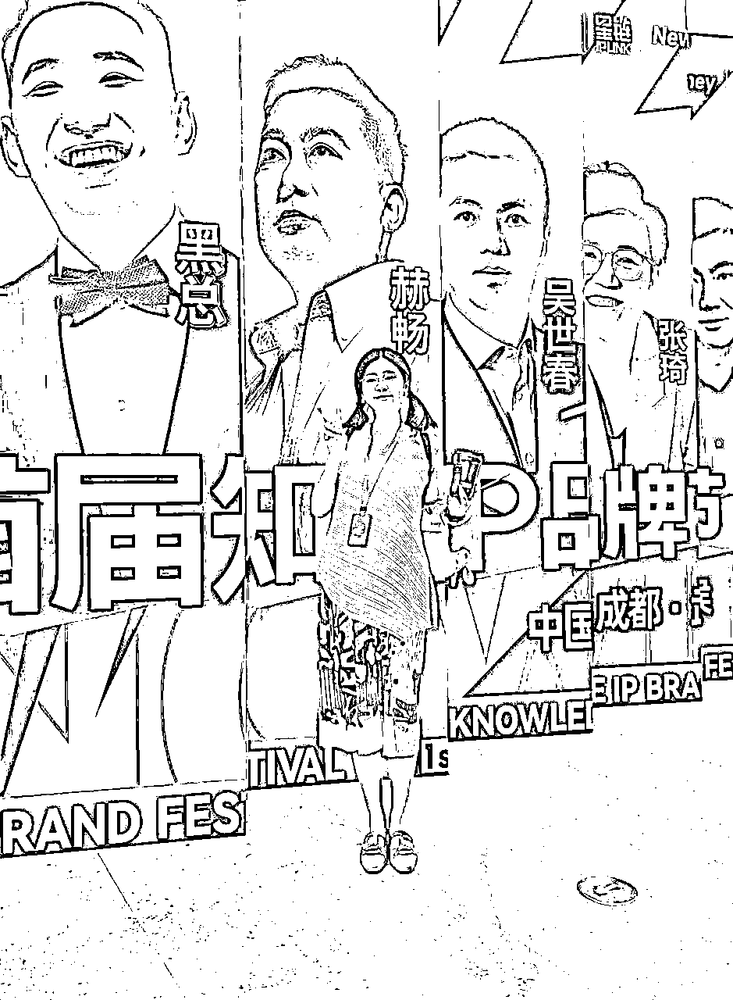
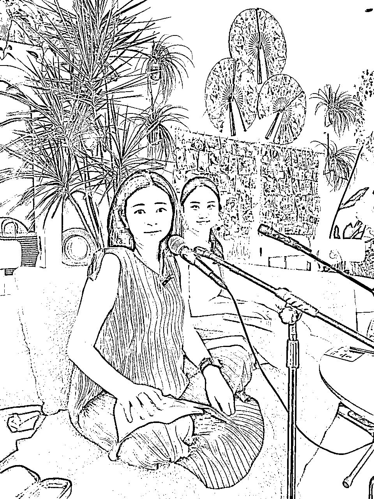
一段好的内容，不是主理人自己“卖力吆喝”，而是让用户真正产生“这就是我需要的”感觉。换句话说，内容创作时要以用户视角呈现产品价值，避免高高在上的“卖家秀”。
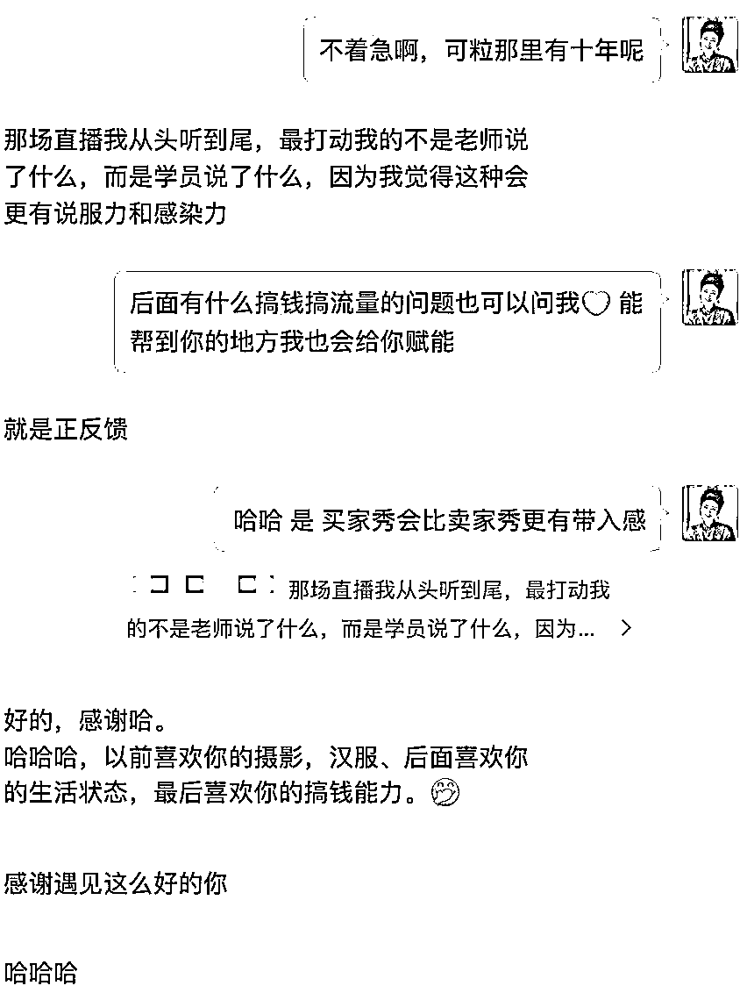
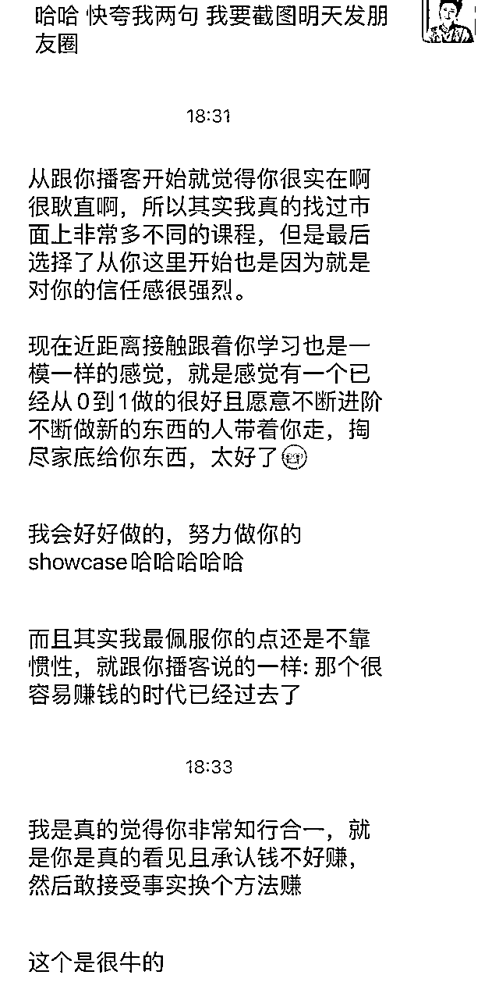
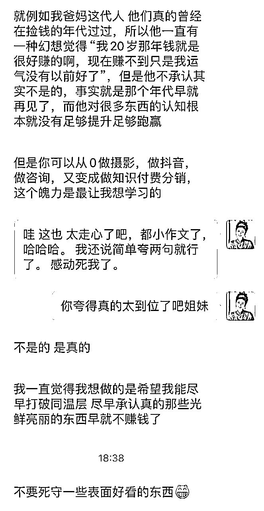
买家秀的特点在于真实、接地气，让用户能产生强烈的代入感。很多知识付费主理人分享的用户案例、学员故事其实就是一种买家秀，通过这些真实的案例，用户更容易将自己代入其中，从而更愿意购买产品。
比如在内容创作时，知识付费主理人可以讲述学员如何通过课程获得实质性提升、遇到的问题是如何解决的等，将产品的功能性用真实故事的形式展现出来，而非简单的功能介绍。这种真实、自然的表达方式能够显著提升用户的信任度与购买意愿。
用户的口碑营销也是一种强大的买家秀形式。在内容创作中，设置一些互动环节，鼓励用户分享学习心得、经验或成果。例如，学员可以在社交平台上分享自己的学习过程，并在社群中与其他学员互动，从而形成一批忠实的口碑传播者。这种方式既增加了内容的互动性，也无形中促进了产品的推广。
更重要的是，播客中涉及的“学员故事”也会成为信任的催化剂。当学员分享自己的真实体验、成长历程、课程的实际效果时，这种口碑往往比任何详情页描述都更有说服力。听众在这些真实的对话中，不仅会“看到”知识付费产品的价值，还能“感受到”它的作用。
搞钱的本质是懂得如何把内容价值传递给用户，满足他们的真实需求，同时在不断迭代升级的过程中提升自身的影响力。对于普通人来说，内容创作搞钱的三大心法可以有效引导你走向一个可持续发展的创作之路：
希望这三大心法能够为更多知识付费主理人带来启发，让你在内容创作的道路上走得更稳、更远。
播客访谈不仅是一种营销工具，更是一种增加产品可信度、增强用户体验、拉近主理人与用户之间距离的有效方式。它能够在潜移默化中展示产品价值，为主理人带来长效的流量和转化效果。
通过合理的策划与执行，播客访谈能够让知识付费的主理人更精准地触达目标用户、增强听众的购买意愿，并借助嘉宾的影响力实现流量的最大化。这种方式不仅能够为知识付费主理人带来丰厚的收入，更能够拓展品牌影响力，提升行业地位。
感谢大家的阅读， 如果有启发，可以点赞，欢迎分享给你觉得身边 同样做内容创业的人，和评论交流